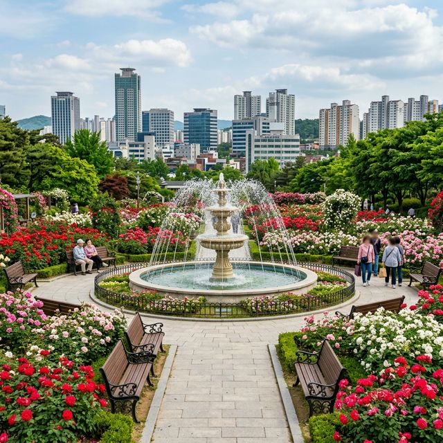
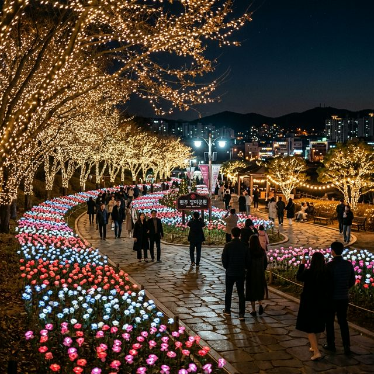
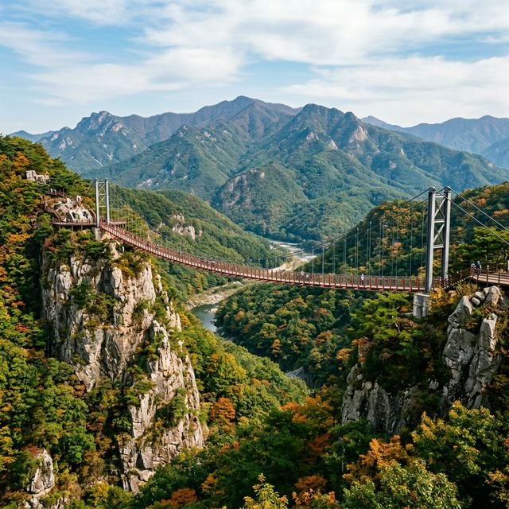

원주의 시화인 장미를 대내외적으로 홍보하고 시민 화합을 위해 시작된 원주 장미축제는 올해로 벌써 제24회를 맞이합니다. 2026년 공식 일정은 장미의 만개 시기를 고려하여 5월 말에서
6월 초 사이로 예상되고 있습니다. 통상적으로 5월 27일경부터 시작하여 주말을 끼고 약 5일간 진행되는 것이 관례인데, 정확한 날짜는 원주시청의 최종 공고를 기다려야 하겠지만
5월 마지막 주 주말을 여행 계획의 타겟으로 삼는다면 틀림없이 만개한 장미를 만나보실 수 있을 것입니다.
강원특별자치도 원주시 단계동에 위치한 장미공원은 도심 한복판에 자리 잡고 있어 일상 속의 쉼표 같은 공간입니다. 1990년대 중반 조성된 이후 꾸준한 관리를 통해 원주를 대표하는 휴식처로 거듭났으며,
축제 기간에는 공원 전체가 하나의 거대한 야외 공연장이자 전시장으로 변모합니다. 매년 10만 명 이상의 인파가 몰리는 규모 있는 행사인 만큼, 지자체에서는 안전 관리와 편의 시설 확충에 심혈을 기울이고
있습니다. 특히 올해는 '원주의 장미, 세계를 향해 피다'라는 주제 아래, 글로벌한 감성까지 더해진 다양한 이벤트가 기획되고 있어 장미축제 애호가들의 마음을 설레게 하고 있습니다.
| 축제 명칭 | 제24회 원주 장미축제 |
|---|---|
| 예상 기간 | 2026. 05. 27(수) ~ 05. 31(일) |
| 주요 장소 | 원주시 단계동 장미공원 내 야외무대 일원 |
| 성격 | 강원도 대표 시민 체감형 꽃 축제 |
원주 장미공원은 도심 주택가와 상업 지구 사이에 위치해 있어 접근성이 압도적으로 뛰어납니다. 약 15,000㎡의 부지에 수만 그루의 장미가 식재되어 있는데, 장미의 여왕이라 불리는 하이브리드 티
품종부터 가늘고 섬세한 아름다움을 뽐내는 미니어처 장미까지 수십 여 종의 다채로운 장미를 한자리에서 감상할 수 있습니다. 장미 터널과 아치, 그리고 장미 벽면을 따라 걷다
보면 마치 비밀의 정원에 들어온 듯한 아늑함을 느낄 수 있죠.
다른 지역의 대규모 장미원과 비교했을 때 규모는 작을지 모르나, 원주 장미공원은 밀도 높은 조경이 특징입니다. 발길 닿는 곳마다 빽빽하게 피어난 장미들이 눈을 뗄 수 없게
만들며, 공원 중앙의 분수대에서 뿜어져 나오는 시원한 물줄기는 장미의 화려함과 어우러져 청량감을 더해줍니다. 260423 시즌을 맞아 노후화된 산책로 데크를 교체하고 곳곳에 클래식한 벤치를 추가로
설치하여, 관람객들이 잠시 앉아 꽃향기를 음미하며 책을 읽거나 담소를 나누기에 이보다 더 좋은 장소는 없을 것입니다. 공원 곳곳에 숨겨진 작은 숲길들은 뜨거운 낮 햇살을 피할 수 있는 지혜로운 휴식처가
되어줍니다.

도심 속 휴식처인 원주 단계동 장미공원의 전경 / AI 제작 이미지
원주 장미축제의 가장 큰 매력은 관람객들이 구경꾼에 머물지 않고 주인공으로 참여할 수 있다는 점입니다. 주말 동안 열리는 '장미 퀸 선발대회'와 '시민 가요제'는 축제의
열기를 최고조로 끌어올리는 인기 코너입니다. 사전 신청을 통해 선발된 시민들이 직접 무대에 올라 자신의 끼를 발산하는 모습은 전문 공연단 못지않은 즐거움과 감동을 선사합니다. 또한, 청소년들을 위한
댄스 경연 대회와 태권도 시범 등 역동적인 무대도 준비되어 있어 전 세대가 어우러지는 화합의 장이 펼쳐집니다.
체험 부스에서는 장미 꽃잎을 활용한 압화 책갈피 만들기, 장미 향수 조제 체험, 장미 비누 제작 등 실용적인 콘텐츠들이 가득합니다. 특히
올해는 원주의 전통 한지와 장미를 결합한 '한지 장미 꽃등 만들기' 세션이 신설되어 외국인 관광객들에게도 뜨거운 반응을 얻을 것으로 보입니다. 축제장 주변으로 길게 늘어선 프리마켓에서는 지역 공예
작가들이 만든 유니크한 소품들과 꽃차 등을 구매할 수 있어 소소한 쇼핑의 재미까지 더해줍니다. 자라나는 아이들에게는 꽃의 소중함을 배우는 생태 학습장이, 어르신들에게는 추억의 가요를 들으며 꽃길을 걷는
힐링의 장이 될 것입니다.
해가 진 뒤 원주 장미공원은 전혀 다른 매력으로 옷을 갈아입습니다. 공원 전체를 감싸는 은은한 경관 조명이 켜지면 장미의 색깔은 낮보다 더욱 깊고 진해지며 몽환적인
분위기를 자아냅니다. 도심의 네온사인과 정원의 따뜻한 조명이 어우러진 풍경은 퇴근길 직장인들에게는 위로를, 연인들에게는 잊지 못할 고백의 장소를 제공합니다. 특히 장미 터널 끝에 설치된 LED
조형물들은 환상적인 야경 사진을 남기기에 최적의 포인트입니다.
2026년에는 '달빛 정원'이라는 테마로 조명 연출이 업그레이드될 예정입니다. 바닥에 장미 문양이 비치는 고보 조명을 설치하고, 나무 사이사이에 반딧불이를 연상시키는 광섬유 조명을 배치하여 마치 동화
속 숲길을 걷는 듯한 경험을 할 수 있습니다. 야간 공연 시간에는 화려한 레이저 쇼와 함께 감미로운 어쿠스틱 밴드의 음악이 정원에 울려 퍼지는데, 시원한 밤바람을 맞으며 장미 향기에 취해보는 이
시간이야말로 원주 장미축제의 진수를 맛보는 순간이라 할 수 있습니다. 돗자리를 챙겨와 야외 무대 근처 잔디밭에 앉아 여유를 즐기는 시민들의 모습은 그 자체로 평화로운 축제의 풍경이 됩니다.

밤하늘과 조명이 어우러진 원주 장미공원 야경 / AI 제작 이미지
원주 장미축제의 가장 큰 장점 중 하나는 뚜벅이 여행자에게 최적화되어 있다는 것입니다. 공원 바로 건너편에 시외버스터미널과 고속버스터미널이 위치해 있어, 서울이나
경기도에서 버스를 타고 내리면 도보로 3~5분 만에 축제장에 도착할 수 있습니다. 무더운 날씨에 차를 주차하고 고생할 필요 없이 대중교통만으로도 충분히 즐길 수 있는 이 편리함은 원주 장미축제만의
강력한 경쟁력입니다. 원주역(KTX)에서도 시내버스나 택시로 약 10분이면 도착 가능하여 지방 거주자들도 부담 없이 방문할 수 있습니다.
자차 이용객들을 위해 단계동 상업 지구 내 공영 주차장과 인근 학교 운동장을 임시 주차장으로 개방할 예정이지만, 축제 성수기인 주말에는 주차 경쟁이 불가피합니다. 가급적 오전 일찍 방문하시거나,
원주시청 주차장에 차를 세우고 셔틀버스로 이동하는 것이 주차 스트레스에서 벗어나는 지름길입니다. 축제장 주변의 도로는 매우 혼잡하므로 내비게이션의 실시간 소통 정보를 반드시 확인하시고, 보행자 보호를
위해 서행 운전하는 배려를 부탁드립니다. 단계동은 원주의 번화가답게 다양한 버스 노선이 경유하므로, 스마트폰 앱을 활용해 최적의 버스 노선을 확인하는 것만으로도 여유 있는 여행을 시작할 수 있습니다.
장미공원에서의 힐링을 마쳤다면 차로 20~30분 이동하여 원주의 액티비티 명소들을 둘러보세요. 원주 레일바이크는 구 간현역에서 판대역까지 이어지는 철로 위를 달리는
코스로, 기암괴석과 시원한 강줄기를 한눈에 담을 수 있는 스릴 넘치는 경험을 제공합니다. 전 구간이 완만한 내리막으로 구성되어 있어 아이들이나 부모님과 함께 가기에도 무리가 없으며, 터널마다 펼쳐지는
화려한 조명 쇼는 또 다른 볼거리입니다.
좀 더 짜릿한 경험을 원하신다면 소금산 그랜드밸리를 추천합니다. 아찔한 높이의 출렁다리와 소금산 울렁다리, 그리고 암벽을 따라 걷는 잔도(Cliff walk)는 심장을
쫄깃하게 만드는 최고의 명소입니다. 출렁다리 위에서 내려다보는 간현관광지의 전경은 가슴을 뻥 뚫리게 해 줄 것입니다. 장미 축제의 정적인 아름다움과 소금산의 동적인 활력이 만나면 하루 일정으로는 모자란
완벽한 원주 여행이 완성됩니다. 소금산 그랜드밸리는 산행이 포함되므로 편한 등산화나 운동화가 필수이며, 입장 전 생수 한 병을 챙기는 센스도 잊지 마세요.

아찔한 높이의 원주 소금산 출렁다리 / AI 제작 이미지
원주에 오면 놓치지 말아야 할 대표적인 먹거리가 바로 추어탕입니다. 원주식 추어탕은 미꾸라지를 통째로 넣는 방식과 갈아서 넣는 방식이 조화롭게 공존하며, 배추김치 대신 잘
익은 총각김치를 곁들여 먹는 것이 특징입니다. 축제장 인근의 단계동에는 오랜 세월 자리를 지킨 추어탕 명가들이 즐비하니 든든한 한 끼를 해결하기에 제격입니다. 고소하고 진한 국물 맛은 봄철 떨어진
체력을 보강해주기에 충분합니다.
또한, 중앙시장(미로예술시장) 내 소고기 골목에서 즐기는 한우 구이도 원주 여행의 백미입니다. 작은 화로에 신선한 소고기를 조금씩 구워 먹는 정겨운 분위기는 미식가들의
발길을 붙잡죠. 시장 구석구석 숨어있는 이색적인 카페와 맛집들을 찾아다니는 재미도 쏠쏠합니다. 장미축제장인 단계동은 유명 프랜차이즈부터 현지인만 아는 숨은 술집까지 다양한 인프라를 갖추고 있어, 밤까지
축제의 흥을 이어가기에 부족함이 없습니다. 장미의 화려함만큼이나 풍성한 원주의 식탁을 마음껏 즐겨보시기 바랍니다.
아이와 함께 방문하는 부모님들을 위해 원주 장미공원은 세심한 배려를 아끼지 않고 있습니다. 축제 기간에는 임시 미아 보호소와 모유 수유실이
설치되어 더욱 안심하고 관람할 수 있습니다. 유모차 대여 서비스도 운영되지만 수량이 한정되어 있으니 개인 유모차를 가져가시는 것이 편리합니다. 공원 바닥면이 평탄하게 잘 닦여 있어 유모차를 끌고 장미
터널을 통과하는 데 전혀 무리가 없다는 점도 매우 큰 장점입니다.
공원 한쪽에는 넓은 잔디밭이 있어 돗자리를 펴고 준비해온 도시락을 먹거나 아이들이 마음껏 뛰어놀 수 있는 공간이 마련되어 있습니다. 다만, 많은 사람이 모이는 장소인 만큼 반려동물과 함께 방문하실 때는
반드시 목줄을 착용하고 리드줄을 짧게 유지하는 배려가 필요합니다. 또한, 아이들이 장미 가시에 찔리지 않도록 주의 깊게 관찰해 주시고, 꽃을 만지는 대신 눈으로만 예뻐해 주도록 교육해주신다면 더욱 수준
높은 축제 문화를 만들 수 있을 것입니다. 축제장 내 곳곳에 배치된 쓰레기 분리배출함을 사용하여 '머문 자리가 아름다운' 원주 시민의 품격을 보여주시길 기대합니다.
마지막으로 즐거운 관람을 위한 최종 점검표입니다. 장미공원은 그늘이 다소 부족한 탁 트인 공간이므로 선크림은 필수 중의 필수이며, 장시간 관람을 위해 가벼운
양산을 챙기시길 권합니다. 생각보다 걷는 양이 많을 수 있으니 예쁜 사진을 위한 구두도 좋지만 가급적 발이 편안한 단화나 운동화를 추천드립니다.
축제 당일 기상 정보를 미리 확인하여 원주는 일교차가 클 수 있으니 늦은 시간까지 머무르실 분들은 얇은 겉옷 하나를 지참하시는 것이 현명합니다.
축제 인파가 몰리는 피크 타임에는 전화 통화나 인터넷 사용이 가끔 지연될 수 있으니 일행과 헤어질 경우를 대비해 미리 만남의 장소를 정해두는 센스를 발휘해 보세요. 모든 이가 행복하고 향기로운 추억을
가져갈 수 있도록 질서를 유지하고 타인의 관람을 방해하지 않는 매너가 이번 원주 축제를 더욱 빛나게 할 것입니다. 올해 5월, 붉게 타오르는 원주의 장미 향기 속에서 소중한 사람들과 인생의 가장
아름다운 한 페이지를 장식해 보시길 진심으로 바랍니다.